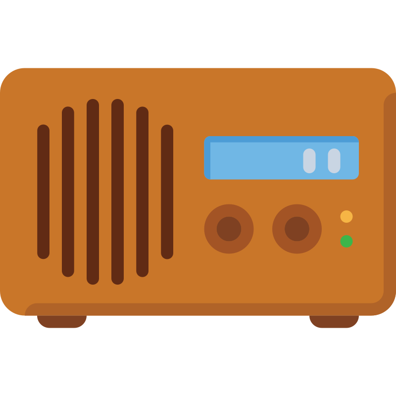

🎲 New Seed!

LoFi Radio
▶
⏹
⏺ Rec
⬇️ Download
BPM
C
C#
D
D#
E
F
F#
G
G#
A
A#
B
1/4
2/4
3/4
4/4
5/4
6/4
7/4
8/4
6/8
🎭 Variation
every
sec
🔑 Auto Key
every
sec
🎲 Auto Seed
every
sec
🎲 New Random Pattern Seed
◈ Pattern 1
◈ Pattern 2
◈ Pattern 3
◈ Pattern 4
Toggle All
Randomization Tracks
Filter
3k
Reverb
30%
Wear
25%